‘Lexia in Wonderland’ is a game that uses letter blocks to create nonwords, designed specifically for dyslexic children to help them learn phonics.
What inspired this project
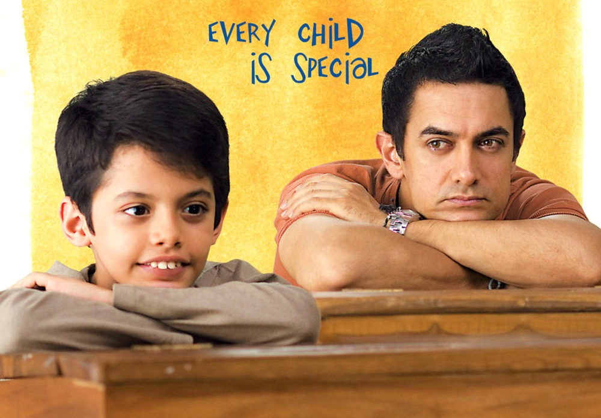
The film explores the life and imagination of Ishaan, an 8-year-old dyslexic child. Although he excels in art, his poor academic performance leads his parents to send him to a boarding school. Ishaan's new art teacher suspects that he is dyslexic and helps him to overcome his disability. (From Wikipedia)
I became aware of dyslexia after watching the movie ‘Like Stars on Earth’ (2007), which is about a dyslexic child and an art teacher who understands his difficulty and guides him to be able to read. After researching how dyslexia is treated in Korea, I found out there was almost no research or understanding of dyslexia. Also, there was no digital service specially designed to help dyslexic children practice Korean at home. There are about 330,000 children who suffer from dyslexia in Korea. Even though they have potential, they are neglected by the current education system that focuses on reading. Through my work, I wanted to help dyslexic children and increase awareness of dyslexia.
Background
Around 5 to 10 percent of children in the world suffer from dyslexia. Among 50 million Koreans, 5 million are suffering from dyslexia.
Korean has its own characters and pronunciation system. Korean characters are called Hangeul and they are based on the shape of the mouth when making sounds.
Problems
- Miss Opportunity — There is a crucial timeframe to treat dyslexia. Once you miss the window, the symptoms become worse.
- Low Self-Esteem — Dyslexia can cause low self-esteem and other mental problems due to the school’s environment that focuses on reading. Dyslexic children usually get mocked by their peers.
- Expensive Treatment — Treatment is too expensive and most people waste money on unproven methods.
- No Guidance for Parents — Parents have a hard time teaching and providing guidance to their dyslexic children.
In Korea, unlike other countries, the understanding of dyslexia is shallow. It is essential to treat dyslexia before children reach the age of 8, yet many of them live life while undiagnosed. Parents also have a hard time guiding dyslexic children, and there is not much material that can be used in explaining dyslexia treatment for them.
About Dyslexia
What is Dyslexia
Dyslexia is a reading disorder characterized by a lack of accurate, fluent reading and difficulty in spelling. Reading is a big part of the Korean curriculum. If children fail to overcome dyslexia at an early age, they can be bullied at school, leading to low self-esteem. The trauma from childhood can affect them long into adulthood.
Symptoms
When children are around age 8–9, the symptoms are first discovered by a teacher or parent. They can detect the signs because they fall behind in academic performance compared to their peers. By age 9–10, children show difficulty reading words with one syllable or phonology. They have difficulty understanding consonants and vowel order. When children reach 12, they often make spelling mistakes and show poor writing ability. They also have difficulty memorizing dates, people's names, and numbers. Even when reaching adulthood, they still have a hard time reading and make spelling mistakes.
Is Dyslexia curable?
Yes. In the past, people thought dyslexia was caused by visual impairments. However, recent findings from cognitive psychology proved that dyslexia is a neurologic disorder in the left hemisphere of the brain. The left hemisphere of dyslexic people can not store text and sounds and can not combine them quickly. If dyslexia is diagnosed after age 10, it is much harder to treat. The younger the brain is, the more flexible it is, and it is more likely to connect neural circuits properly. Therefore, early detection is critical. Once a child misses the timeframe, children must apply greater efforts to keep up with their peers.
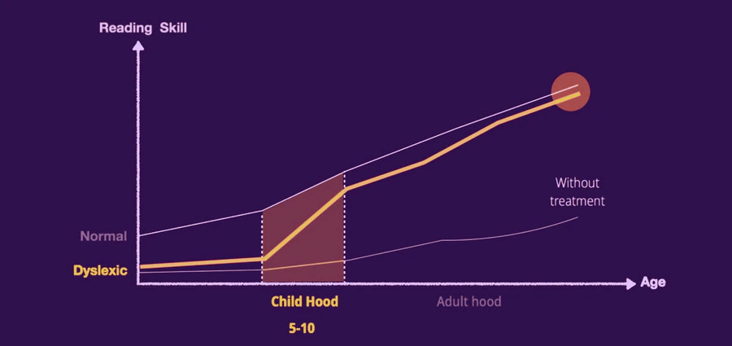
How to treat Dyslexia — what are the problems of the current method?
Phonology should be taught to link the written form and sounds. However, there are problems with the current education methods.
- Books currently used in medical institutions and homes to treat dyslexic children are mostly hard and challenging to understand. As a result, children lose interest in learning Hangeul (Korean characters) and often refuse to take classes.
- It is difficult to keep up with expensive private classes with a price of over $100 per hour.
- There is a lack of medical centers that specialize in treating dyslexia. Therefore, it is usually far away from where dyslexic children live. Sometimes, parents take an airplane from Jeju island to visit the medical center in Seoul.
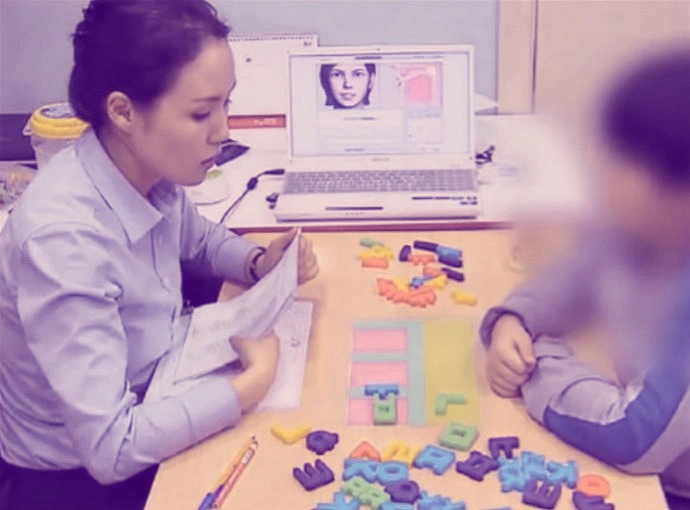
Research Process
User Interview
We interviewed groups of non-specialists and experts. The picture below shows an interview with a college student, A, who had a difficult school life because of dyslexia.
Non-Experts
“I wish I knew dyslexia early, too. Now that I'm an adult, there's not much I can do to ease the symptoms.”
“I had a hard school life. I failed the university entrance exam several times, and after I got in, I had to record the whole class and textbooks because I had difficulty reading.”
“After several months of receiving treatment from the institution, I stopped because it was too far and expensive. I'm trying to teach at home, but it's not easy.”
“I give my son homework, but he runs away. The therapist said it is only useful when he practices every day.”
Experts
“Children have different levels of dyslexia, so they need a customized education.”
“To adjust well in school life, it is better to start treatment before the child gets into the school.”
“Children who study with me take courses one or two times a week. However, it is essential to practice Korean every day even when they don't visit the medical center to attend the class.”
“No matter how hard you try after the third grade of elementary school, you can't have the same fluency as the average person.”
Affinity Diagram
We wrote down keywords from the interview and then rearranged them by categories.
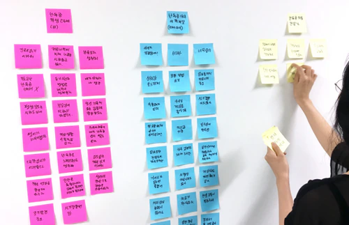
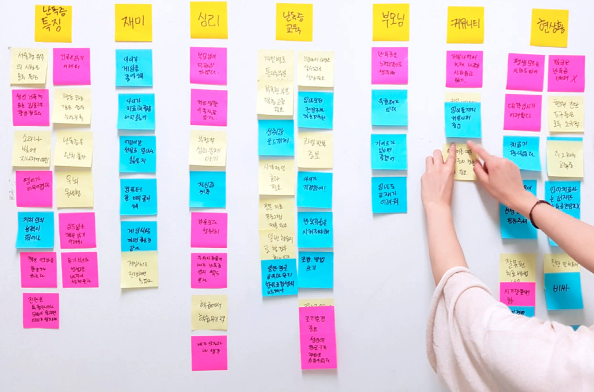
Persona 1 — Min-Jung Kim / 38 years old
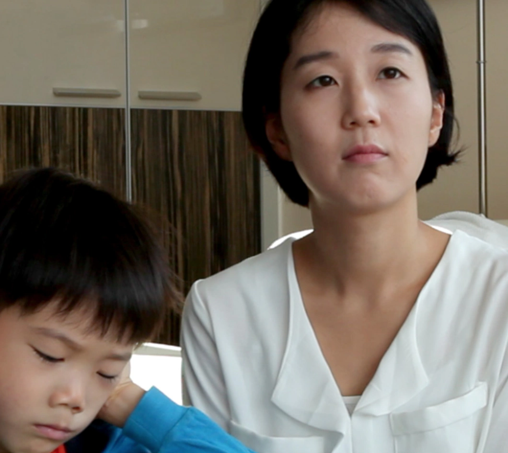
Situation: She is a working mom who raises a dyslexic child. Thinking: She wants to prompt the child's interest in reading and wants to practice Korean with the child every day.
Conditions: Min-Jung Kim is an office worker who has an eight-year-old son. It is difficult for him to read or write Korean as compared to children of his age. She suspected dyslexia, and she made him take a special class once a week at an institution. As time went by, she felt burdened by expensive tuitions and distance to the medical center. The child was also not very interested in learning Korean. Eventually, she gave up, and now she plans to buy dyslexic education books and teach Korean to her son. However, her son tries to run away. To teach him in person, Min-Jung also has to study Korean phonics and teach them to her son effectively. However, she feels frustrated because she does not have enough time to spare.
Needs: 1) I want to diagnose my child at home when he is suspected of dyslexia. 2) I want to improve dyslexia anywhere and at a low cost. 3) I hope there is an exciting education service so the child can get interested. 4) I want to teach Korean as frequently as possible. 5) I want to see the progress of the child.
Persona 2 — Jee-Hee Park / 8 years old
Situation: He is having low self-esteem because of his lousy reading skills. Thinking: He wants to read well like his friends and to be understood for his difficulties.
Conditions: He feels left behind because his peers are good at reading, but he isn't. He wants to avoid reading in front of the class. He is usually misunderstood as problematic and lazy, even though lousy reading is only a symptom of dyslexia, and he can not control it. He gets angry because his parents treat him like a problem child because he can not read. This misunderstanding causes trouble within the family. In the class with a language therapist specializing in dyslexia, he can enjoy learning Korean even though it was difficult because they guide them well. However, when he is learning Korean at home with his parents, he becomes less interested because his parents are not as good as the therapist at guiding him. It worsens the relationship between the child and the parents. Instead of learning Korean, he wants to play games all day. As he hates reading, his confidence has decreased, and his grades in school dropped.
Needs: 1) I want to learn Korean like a fun game. 2) I want to read as well as my friends. 3) I don't want to fight with my parents. 4) I want to be understood for my problems.
Experience Mapping — Parents' Point of View
Discover: Parents start to recognize that their children are left behind compared to their peers. If they do not observe them carefully at this stage, there is a high possibility that they do not take the symptoms seriously and miss the time frame for the treatment. Parents can confuse dyslexia with other symptoms such as ADHD and other learning difficulties. There is a risk of pursuing non-scientific practices such as oriental medicine or eye training to improve reading ability.
Treatment: The patient is confirmed to be dyslexic by visiting a specialist agency — start the dyslexia therapy program, visit once or twice a week and treat it with language therapists. Therapists often give homework to encourage steady learning; however, homework is often left undone. They may find the symptoms are slightly getting better.
Giving Up: Parents try to teach Korean to the child at home. The child refuses to learn because parents are not a teacher. Since parents are not experts, it is hard to teach them without proper guidelines.
Solution Points: If the user suspects dyslexia, they can use the Diagnostic function in the app and get suggestions on whether they should visit an institution that treats dyslexia to get a diagnosis. Using the application, the child can continue learning Korean without losing their pace when they do not attend classes in the institution. Exciting content in the app encourages the child to study with their parents without a teacher. Also, the application provides a guideline for parents on how they should guide their children. If the parents are too busy to teach, children can study by themselves.
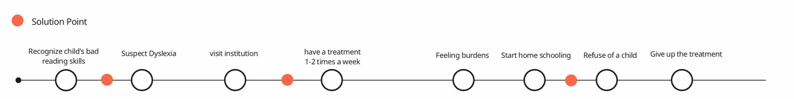
Design Insights
“An engaging service to help dyslexic children to study Korean at home and have ongoing training”
Service Overview
Who: Dyslexic children from 5 to 10 years old
What: Korean phonics practice using nonwords
When: Every day at home when they do not visit the professional institution
How: Actively and continuously, by themselves or with parents
Concept
We combined contents of the book ‘Reading Confidence’ with the story of ‘Alice in Wonderland’ to provide more exciting learning experiences. We thought there are similarities between dyslexic children experiencing weird letters and Alice meeting strange characters in wonderland. So we applied the story of Alice in Wonderland to our app design. We transformed the books into digital multimedia content. Children can use multimedia content on their digital devices to practice Korean. After following the mouth shape, children can film themselves using a camera and compare it with the answer.
Combining the book ‘Reading Confidence’ with the story of ‘Alice in Wonderland’
Design Ideas
To maintain the benefits of professional dyslexia treatments and maximize the benefits of online and digital content, we embraced the following methods: Multisensory Instruction, Storytelling, Personalized Instruction, Gamification.
1. Multisensory Instruction
We decided to use multisensory instruction to enable children to learn Hangeul by using various senses such as sound and touch.
2. Storytelling
Alice meets the characters that represent each chapter and travels each stage to return to reality. The structure follows the ‘Growth epic’. We set the background of the game as a fantastic place to stimulate the imaginations of children. Fun and friendly characters help children learn Hangeul and overcome emotional trauma.
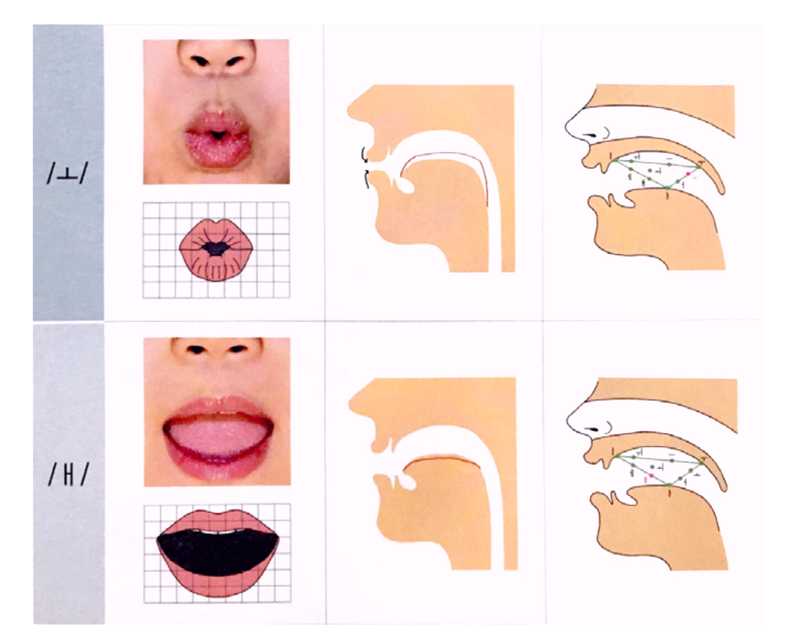
→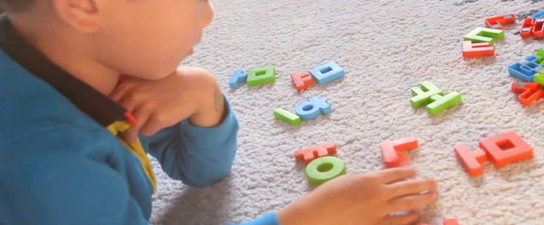
3. Personalized Instruction
The application provides individual guidance on learning steps according to children's needs. Children can focus on improving areas where they are weak by checking their weaknesses on the ‘report’.
4. Gamification
On ‘My page’, children can see their progress. Gamification of the learning process can help children get interested in learning Korean. The application gives positive feedback and encouragement while children play the game. It encourages them to continue learning Korean voluntarily. The application uses a reward system — whenever children make progress, they get badges as a reward.
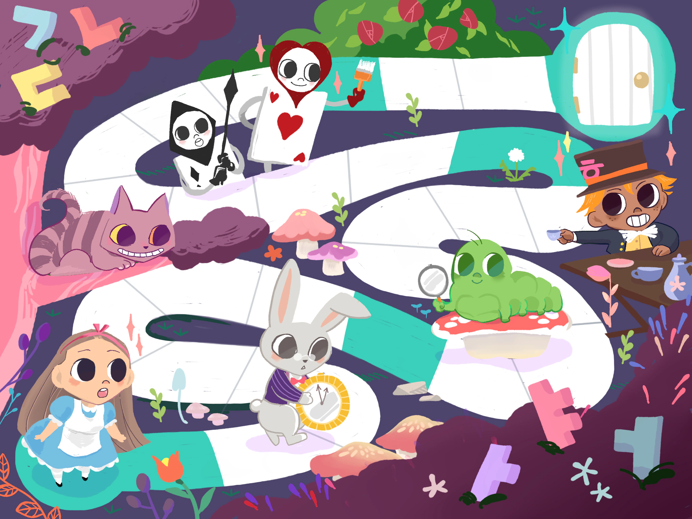
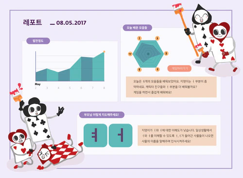
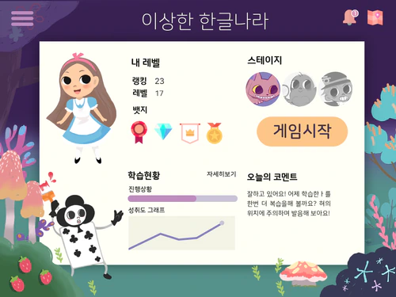
Low-fi Prototype
Diagnosis
It diagnoses dyslexia by assessing how well children understand the principles of consonants and vowels. Based on that, it judges the level of fluency. The app plays the instruction that guides children to replace consonants or vowels based on what they heard (e.g., which vowel do you need when you want to change ‘Nack’ to ‘Nock’). The app asks children to record their voices while reading the text in the box within a given time. It measures how fluent they are when reading text.
Learning Phonics
Using multimedia contents, children learn how to pronounce letters. The app shows the mouth movements and how the tongue locates within the mouth to teach children how to pronounce each consonant and vowel.
Phonics Game
Based on the phonics that children learned, they play a phonics game. Children listen to the pronunciation of vowels and then select the answers in order.
Understanding Phonemes
Learn how phonemes are pronounced when they are next to each other. When children combine specific phoneme blocks, it shows how juxtaposed phonemes are pronounced.
Report
They get a report based on their play. The child and parents can see how much the child progresses in visual graphs, and it gives guidelines to the parents. The report page shows children and parents how much they are improving and their common mistakes with feedback.
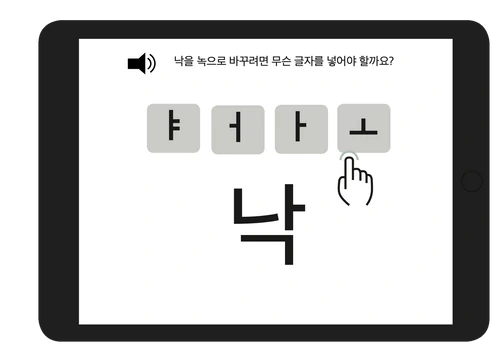
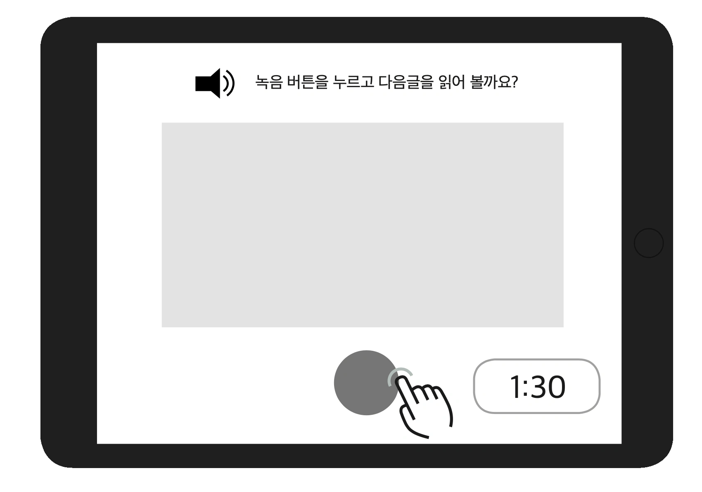
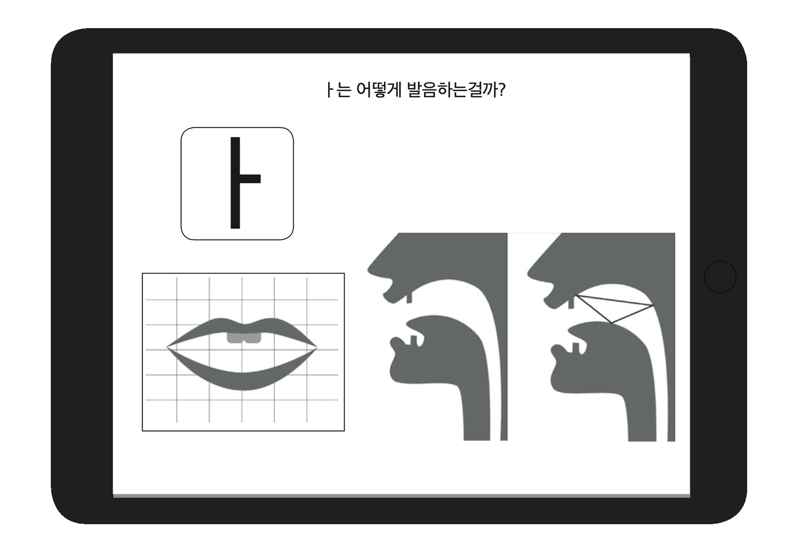
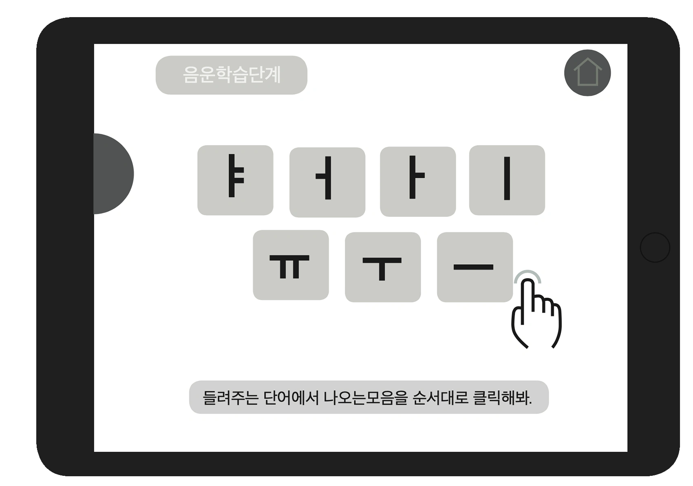
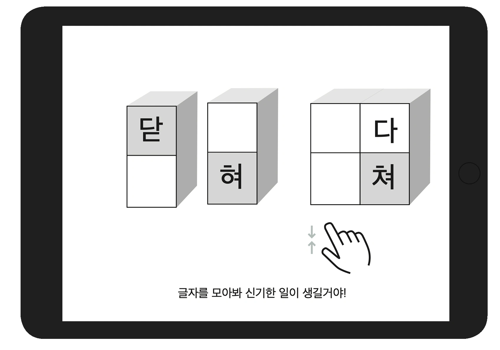
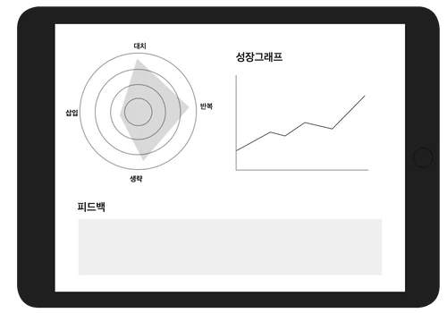
Test & Development
Wizard of Oz Testing on a Dyslexic Child & Her Caregiver
We tested the prototype on an 8-year-old dyslexic child, ‘Ji-Yoon’. First, we asked the father to teach the child how to pronounce certain vowels using the textbook used in offline lessons. Then, we asked Ji-Yoon to learn other vowels using the application. We got qualitative feedback from the father and Ji-Yoon that it is more fun to learn Korean phonics. The father mentioned that it reduced the burden of teaching phonics to the child, and the application worked as a guideline for him.
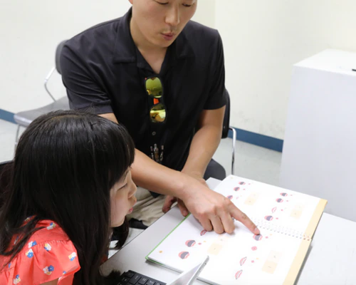
Left: learning pronunciation with the parent using a book · Right: Ji-Yoon is using the application instead of the book to learn Korean vowels on her own
Expert Interview
“Instead of regular words, dyslexic children should practice non-words” — Dr. Jae-Seok Jung, dyslexia expert and author of ‘Reading Confidence’
Even though we got positive feedback from the dyslexic child and the caregiver, we wanted to get feedback from an expert. We interviewed Dr. Jae-Seok Jung, a dyslexia expert who wrote the book ‘Reading Confidence’ for dyslexic children — the only book in Korea designed especially for dyslexic children. As our application is based on the book's contents, we thought it natural to ask his opinions about the application design. He emphasized the importance of practicing ‘non-words’ because dyslexic children tend to memorize whole words instead of understanding phonics. Therefore, it is essential to make children practice phonics with non-words, so when they encounter new words, they can read them naturally.
What are non-words? A non-word is a combination of letters but without meanings — regular words: Cat, Museum → non-words: Caet, Mooseum.
- “We need to teach them in the form of individual characters, unlike the usual Hangeul education apps that are currently available on the market.”
- “We definitely need games for dyslexic children to help them enjoy learning Korean at home.”
- “Instead of trying to put all contents in the book into the app, I believe it is better to focus on repetitive training.”
Developing the Prototype for the Non-words Block Game
Based on the expert interview, we decided to develop the app further. We decided to create a multi-sensory game that enables children to use word blocks to combine words. This idea came from previous studies that suggested block play improves reading skills.¹ After hearing the pronunciation of the non-words, the user makes non-words using letter blocks. Then the webcam records and sends data to the computer. We used the software ‘Processing’ and image recognition to give feedback on whether the answer is correct.
1. Effect of Block Play on Language Acquisition and Attention in Toddlers — Dimitri A. Christakis, MD, MPH; Frederick J. Zimmerman, PhD; Michelle M. Garrison, PhD. American Medical Association
The flow of the block game
The caterpillar reads non-words and asks the child to combine letter blocks to make what he/she heard.
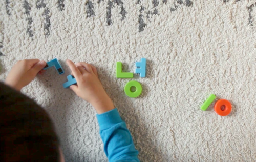
The caterpillar gives feedback that the answer is wrong and encourages the user to retry.
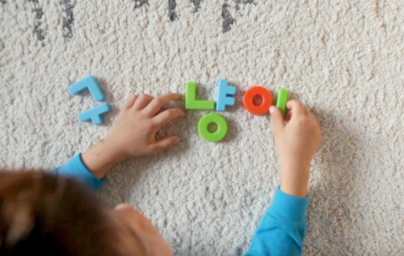
The caterpillar gives feedback that the answer is correct and gives a verbal compliment to keep the user motivated.
Final Design
Mood Board
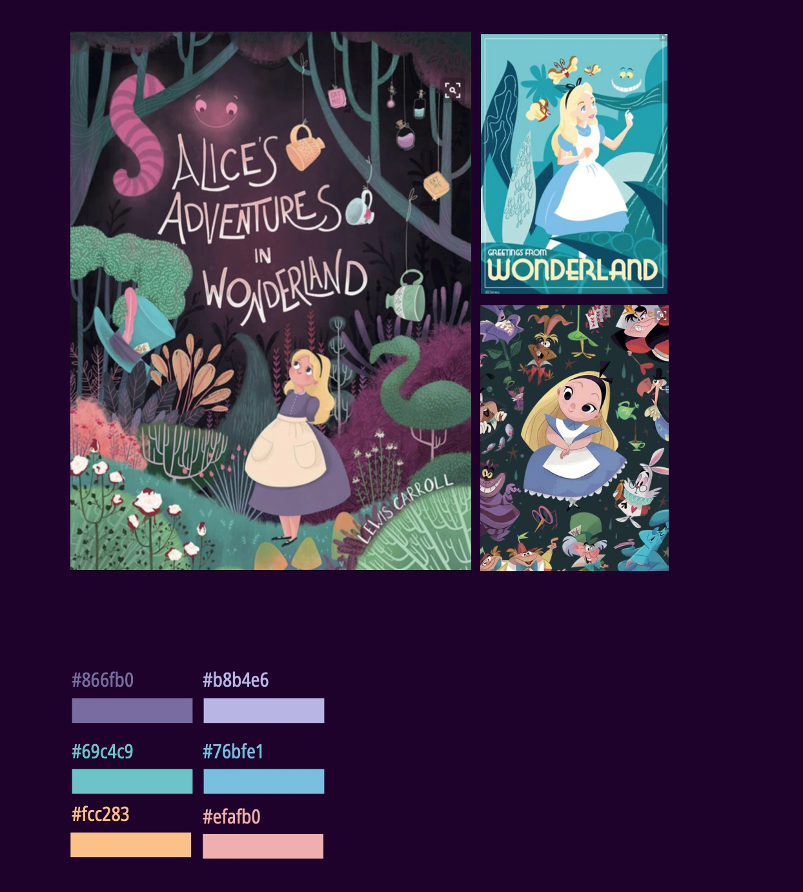
UI Design
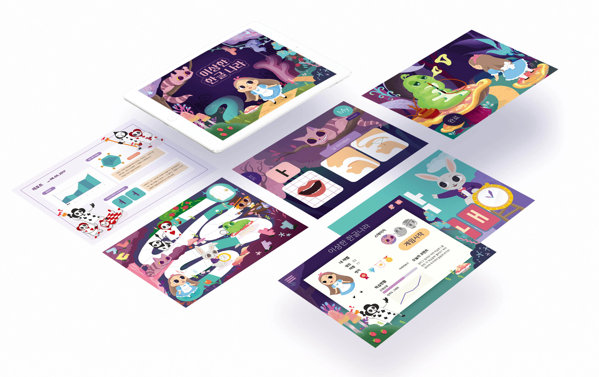
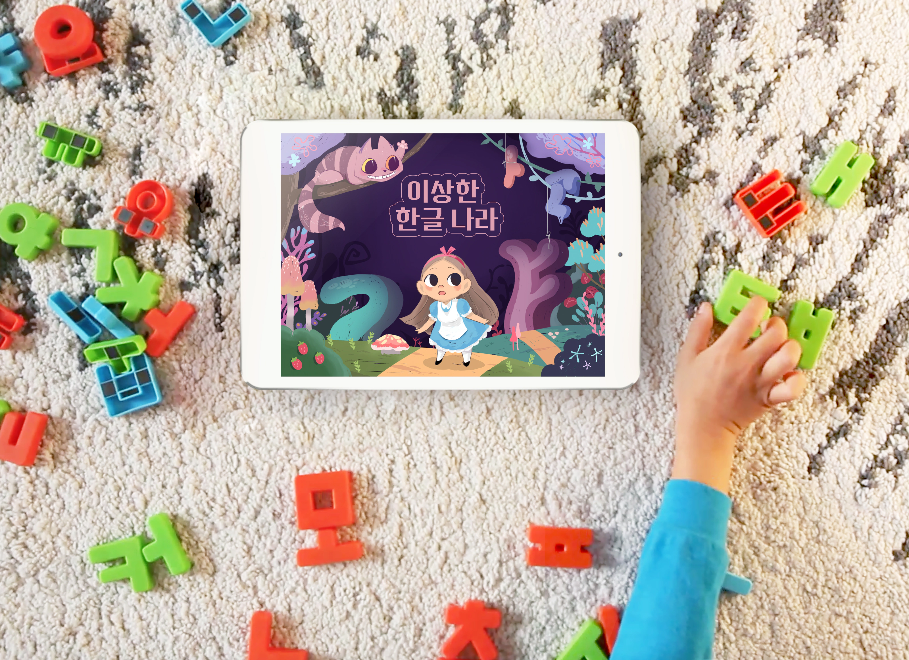
Exhibition
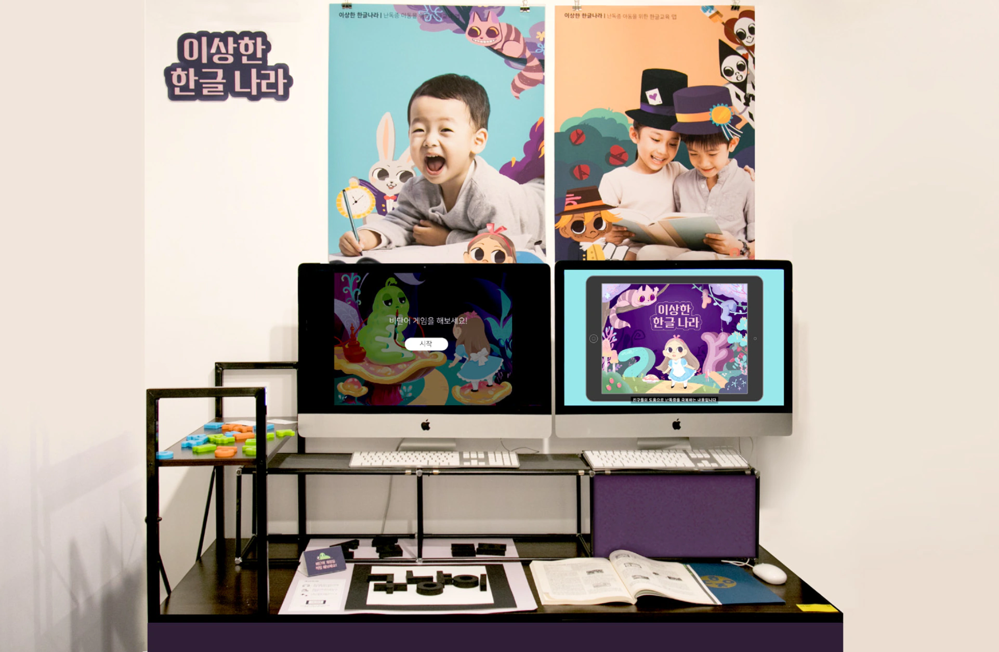
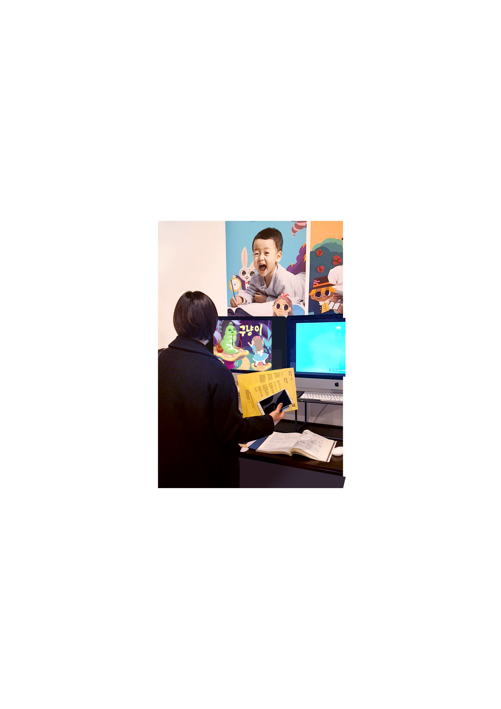
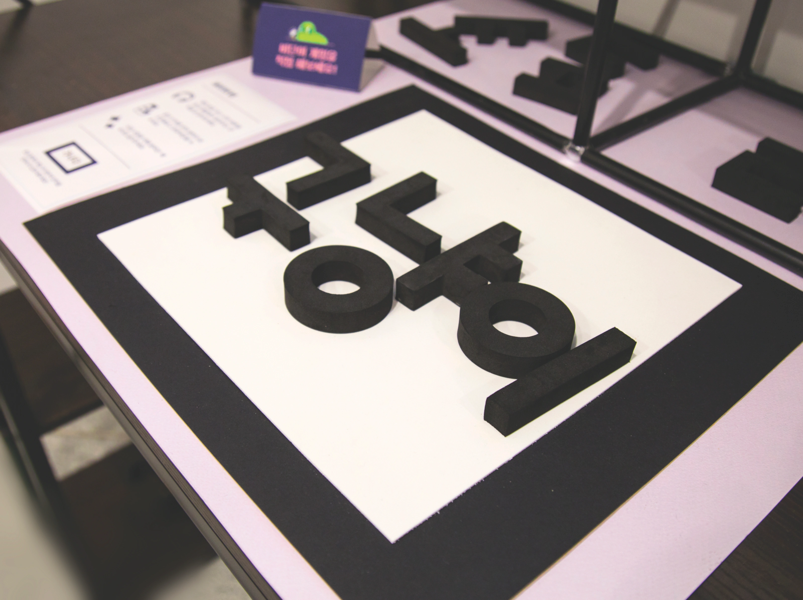